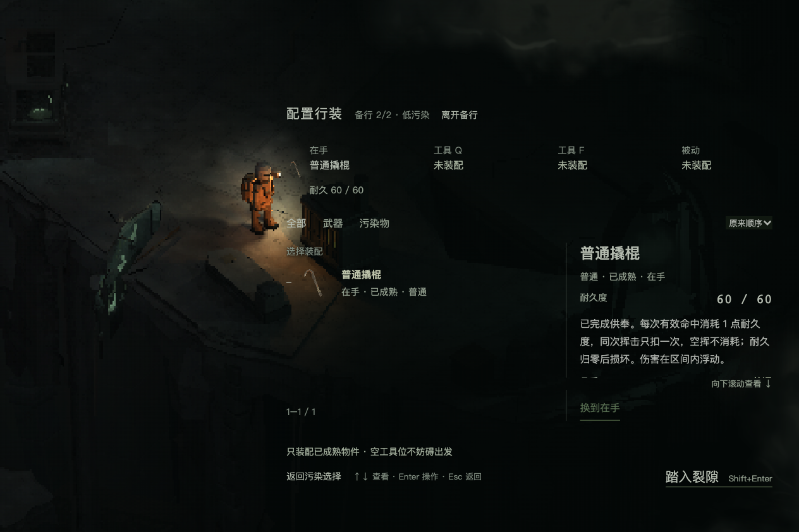
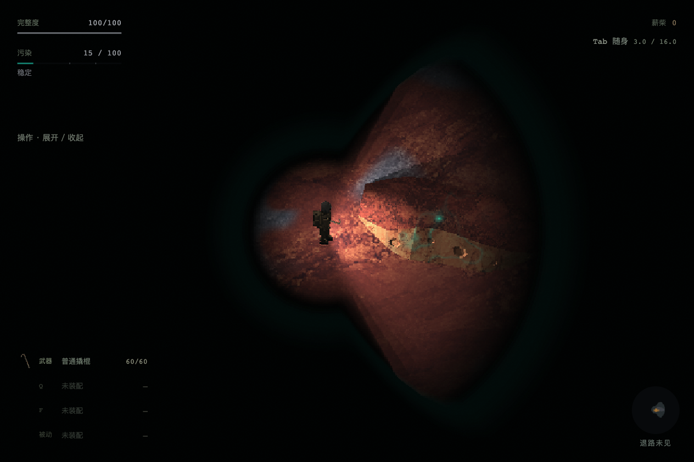
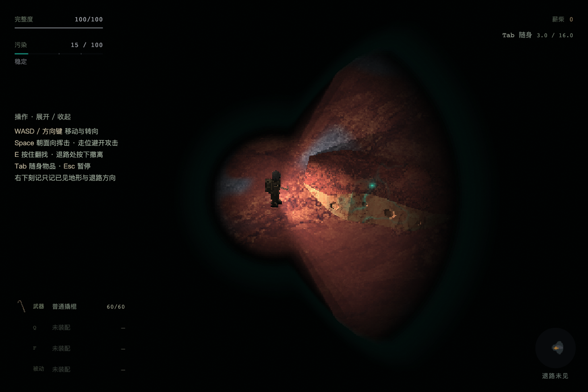
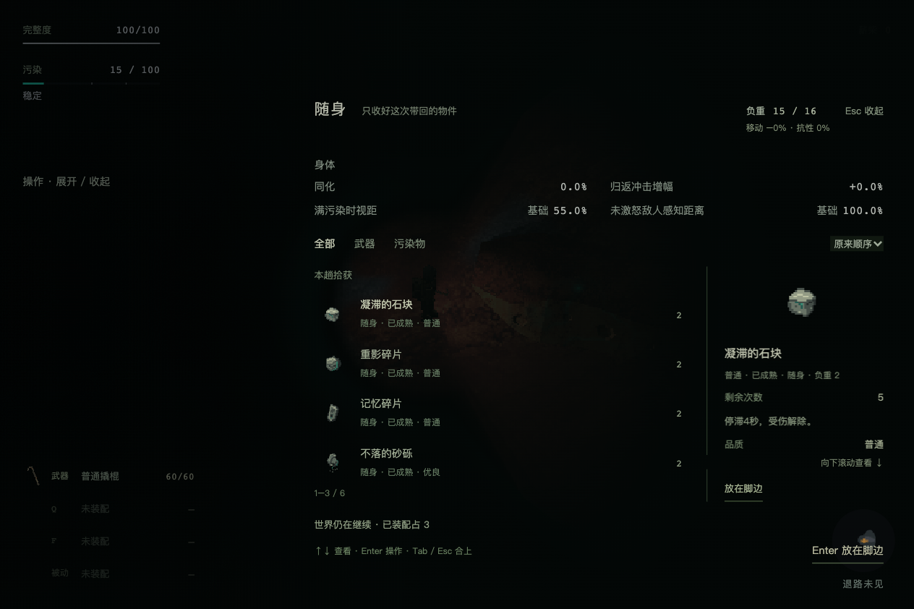
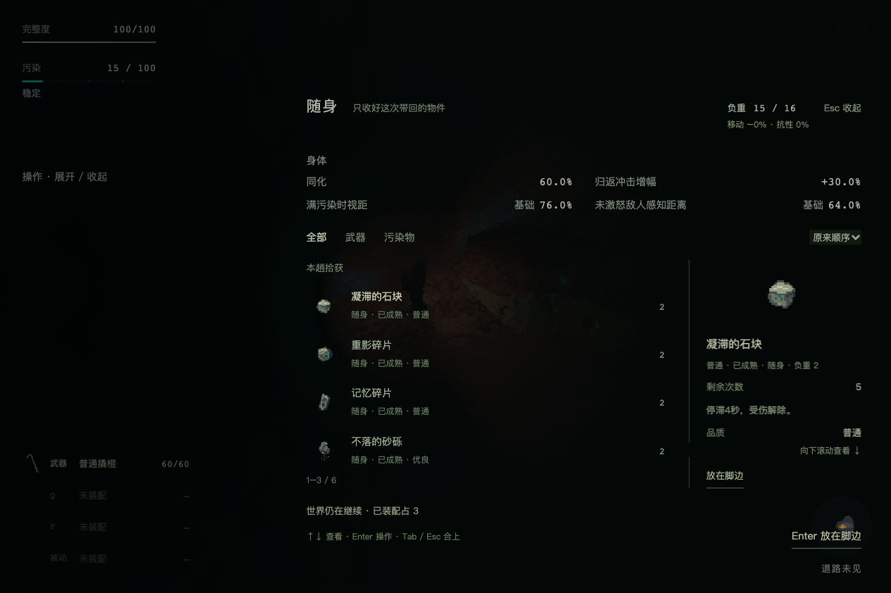
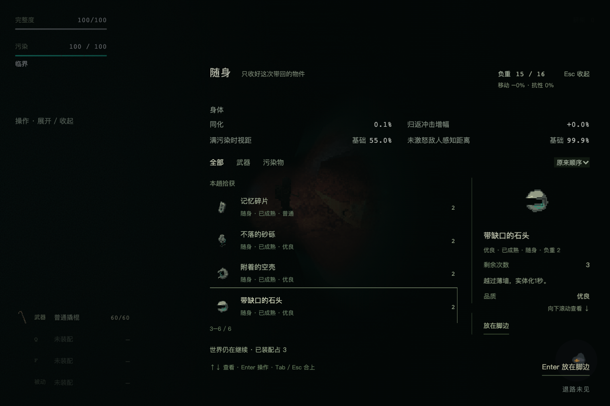
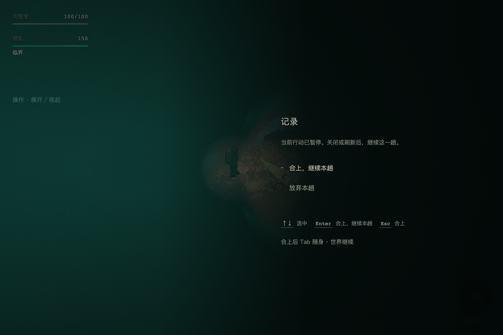

DEC-222 · HUD / 随身身体查询 fail · 155.0.8059.80 · 6a32075440d5c00bcc3311ac998feea73681e0ea
One isolated Chrome context; title → new record → base → real preparation → one low-grade Rift. Controlled A/P and six CSV-derived item projections injected only into the production panel snapshot; inventory ownership/storage is untouched. Legacy is a presentation fixture only. No user storage, natural expedition/economy/balance, other worlds, Firefox/Safari or human aesthetic acceptance.
完整执行记录、取样与源码 SHA-256
pass — isolated new record begins with A0 pass — prepare contains no Rift body section pass — new departure is persistent-v1 pass — HUD omits assimilation and mechanism sentences pass — help initially collapsed pass — HUD entry named 随身 pass — hud-entry: new text sampled contrast >= 4.5:1 pass — help click expands pass — help keyboard collapses without attack pass — six real CSV-derived item projections without storage writes pass — click opens named 随身 body at A0 pass — all four A0 values match shared helpers pass — body two columns two rows and independent labels/baselines pass — reading warns world continues pass — body-a0: new text sampled contrast >= 4.5:1 pass — Tab closes without pause pass — A60: four values match helpers pass — A60: impact has explicit increase sign pass — A100: four values match helpers pass — A100: impact has explicit increase sign pass — body-a60: new text sampled contrast >= 4.5:1 pass — Esc closes inventory without opening pause pass — P100 is capped at 100 under new protocol pass — inventory remains live during real full-pollution ticks pass — real A tick crosses displayed 0.1 precision pass — scroll and selected real item retained without node replacement pass — new labels show four real facts after tick pass — W closes and restores live movement without pause/attack pass — A closes and restores live movement without pause/attack pass — S closes and restores live movement without pause/attack pass — D closes and restores live movement without pause/attack pass — movement after close changes real position pass — standalone Esc still pauses pass — pause refers to 随身 rather than 拾获 entry fail — Esc resumes standalone pause pass — legacy projection preserves 150 label pass — source files stable during browser QA pass — no runtime page errors pass — no console errors prepare-shared-production 
hud-clean 
hud-help-expanded 
body-a0-six-items 
body-a60 
body-a100 body-real-tick-retained-scroll 
error-8 